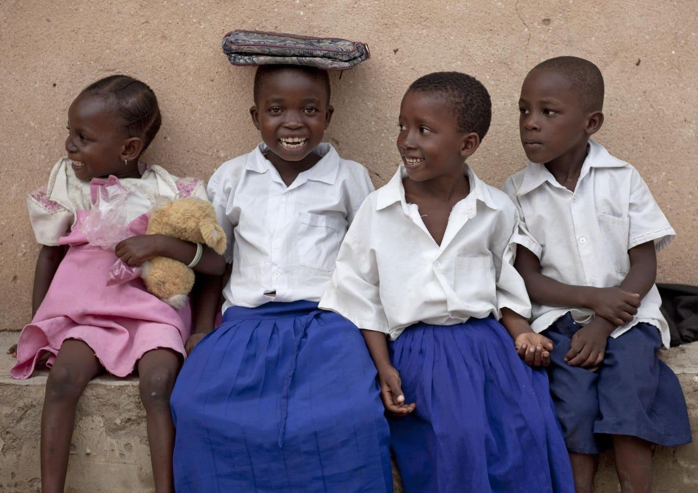

Inspiring Young Women And Girls To Be LeadersMarch 8 is International Women’s Day, a century-old, global day of celebrating the social, economic, cultural, and political achievements of women. This year’s theme is “inspire inclusion,” and its aim is to celebrate diversity and empowerment, and to inspire others to understand and value women’s inclusion for a better world. One of the core beliefs of the organizers of International Women’s Day is that collective action and shared ownership for driving gender parity is what makes the annual campaign successful. “The story of women’s struggle for equality belongs to no single feminist nor to any one organization but to the collective efforts of all who care about human rights,” stated Gloria Steinem. Nonprofit organizations like She’s the First, CAMFED, and Girls Who Code are taking this collective action and working every day to inspire young women and girls to be leaders in their communities. She’s the First was founded in 2009 by Christen Brandt and Tammy Tibbetts who wanted to use social media to inspire and motivate their generation to support girl’s education by helping girls become the first in their families to graduate from secondary school. Today, She’s the First fights for a world where every girl can choose their own future by teaming up with grassroots leaders to make sure that girls everywhere are educated, respected, and heard. Over the past 15 years, She’s the First has created transformational outcomes for nearly 564,000 girls by working alongside of 685 community organizations in 42 countries. “It’s not just me changing the world,” said Tibbetts in a 2014 interview in Marie Claire. “It’s the thousands of members of the She’s the First community who realize that even small contributions can have a huge impact and who are not afraid to be the ones to take the first step.” She’s the First is also one of the founders of The Global Girls’ Bill of Rights, which lists ten global rights for girls, including equality, freedom and protection from exploitation and violence, a quality education that prepares them for the modern world, involvement in decision-making and pursuit of leadership positions, and comprehensive sexual education and access to reproductive healthcare. CAMFED is a pan-African organization that serves girls and young women in impoverished districts in rural Africa, tackling the pressing and interlinked challenges of poverty and gender that limit their education and opportunity. CAMFED sees girls’ education as the foundation for social justice, women’s leadership, economic development, and climate action, and it partners with thousands of schools, communities, and education authorities in Ghana, Malawi, Tanzania, Zambia, and Zimbabwe. Since 1993, it has supported more than four million students to attend primary and secondary schools. “For nearly three decades, CAMFED has focused on making sure vulnerable girls are seen, heard, and supported to achieve their full potential,” said Angeline Murimirwa, CAMFED executive director in a 2021 conversation with Nicholas Kristof of The New York Times. “That saves lives, alleviates suffering, and maintains the dignity of those we serve.” Girls Who Code is on a mission to change the image of what a programmer looks like and does. With over 6,300 programs around the world, Girls Who Code has helped over 580,000 girls, women and nonbinary individuals prepare to enter the workforce and close the gender gap in entry-level tech jobs by 2030. With over 50 percent of the girls that Girls Who Code coming from historically underrepresented groups, the organization values bravery, sisterhood, and activism, and it believes that diverse ability, culture, identity, and opinion makes its organization and programs stronger. “Girls Who Code’s flagship Summer Programs have been critical to sparking interest in computer science among high school students, and turning that interest and passion into lifelong careers, said Tarika Barrett, CEO of Girls Who Code in a press release announcing its 2024 Summer Programs last week. “Year after year, our Summer Programs become more flexible, more customizable, more rooted in the science and tech of today, and more aligned to the specific needs of students. We’re thrilled to continue expanding our programming to ensure that all students, no matter their backgrounds, have access to high-quality computer science education.” One way of ensuring the inclusion of diverse young women and girls in the world is helping them achieve their full potential through education so that they can prepare themselves to be leaders in their communities and countries. She’s the First, CAMFED, and Girls Who Code are showing these young women and girls the way forward. |
 |